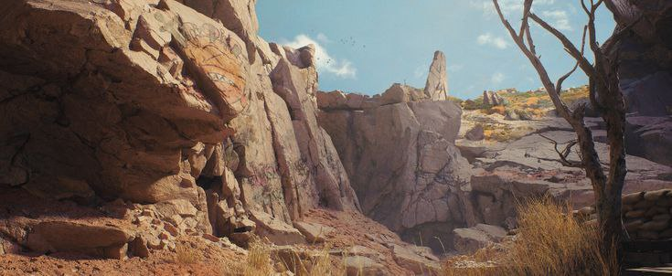
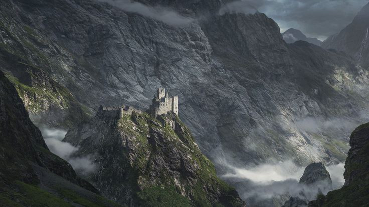
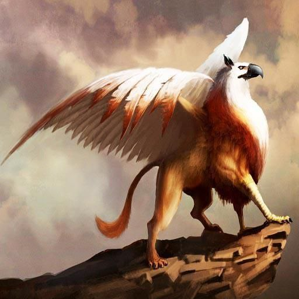

Правый Клык сравнительно мягче своего левого собрата. Погода здесь более умеренная — хоть и ветрено, но ветер не такой ледяной и свирепый, как по другую сторону реки. Небо часто ясное, и солнце задерживается здесь дольше, освещая скалистые плато и отвесные уступы. Растительность крайне скудна: по редким трещинам в камне пробиваются колючие кустарники и выносливые травы, в основном серо-зелёных тонов. Иногда встречаются карликовые деревца, сросшиеся с окружением. Ландшафт напоминает застывшее море — волны скал, обрывистые гребни, резкие ущелья и остроконечные пики.
Львиный клык правый

Добро пожаловать на Львиный клык правый!
Львиный Клык Правый — это величественное и суровое плоскогорье, возвышающееся над окрестными землями как каменный гигант, изрезанный ветрами и временем. Скалистый рельеф, полный обрывов, выступов и резких перепадов высот, словно отпечаток чьей-то древней ярости, до сих пор хранит следы мифических катастроф. Согласно преданиям, Львиные Клыки — творение гнева древнего бога, удар когтистой лапы которого разрубил землю и стер с неё целый народ. Эхо той ярости живёт здесь до сих пор, в руинах, в резком ветре, в грохоте падающих камней.
Природа и ландшафт

Древние руины

У подножия правого Клыка, рядом с Плато Раскола, расположен древний разрушенный замок. Его каменные стены, некогда сиявшие на солнце, теперь покрыты мхом и трещинами, а вокруг — остатки разрушенного поселения. Фундаменты, перекошенные арки, полусгнившие балки — всё напоминает о давно забытом прошлом. Ходят слухи, что замок был возведён в противовес гневу древнего бога, а потому пал в страшной буре из магии, стали и криков.
Обитатели

Правый Клык — царство хищных воздушных созданий. Грифоны — главные властители здешних небес. Их гнёзда можно увидеть на отвесных скалах, откуда они воспаряют в небеса. Фурчи (пернатые хищники с длинными хвостами), клювы, а также в редких случаях над плато проносится крылатый лев — гордый, уединённый зверь, чьё появление считается знаком перемен. В пещерах живут резные гоблины и урсы — массивные страусоподобные существа, редкие, но опасные.
Кроме того...
В глубине гор простираются Идрийские пещеры Центы — старые шахты и естественные лабиринты, полные редких минералов и руд. Искатели приключений и добытчики ценностей часто стремятся туда, несмотря на риск.